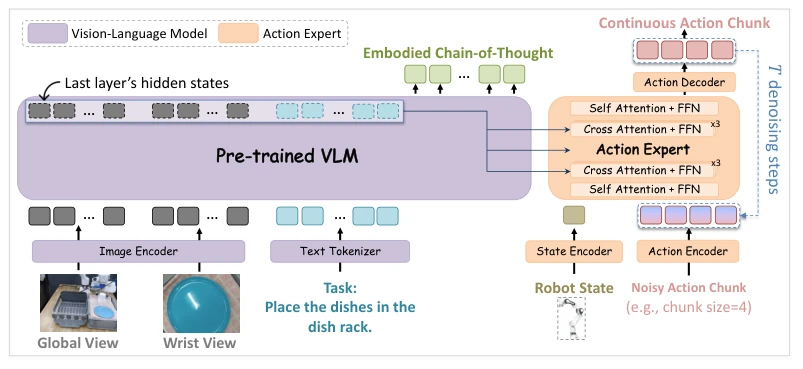
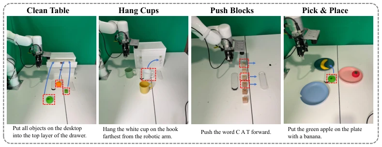

Training Vision-Language-Action Models with Dense Embodied Chain-of-Thought Supervision
Haoyang Li, Guanlin Li, Youhe Feng, Chen Zhao, Zhuoran Wang, Yang Li abspdf
论文点评Review
—
—
研究动机Motivation
—
—
方法Method
[1]
—
实验Experiments
[2]
—
其他图片Other Figures

Figure 1: The framework of ZR-0. ZR-0 combines a vision-language model (VLM) with a Diffusion Transformer (DiT)-based action expert. Joint training is performed on embodied chain-of-thought (ECoT) via next-token prediction, and on continuous actions using denoising vector field prediction.

Figure 2: Examples of real-world robotic environments and task setups. We evaluate ZR-0 on four diverse tasks to assess its capabilities in instruction following, color understanding, long-horizon planning, spatial reasoning, and OCR-based reasoning.